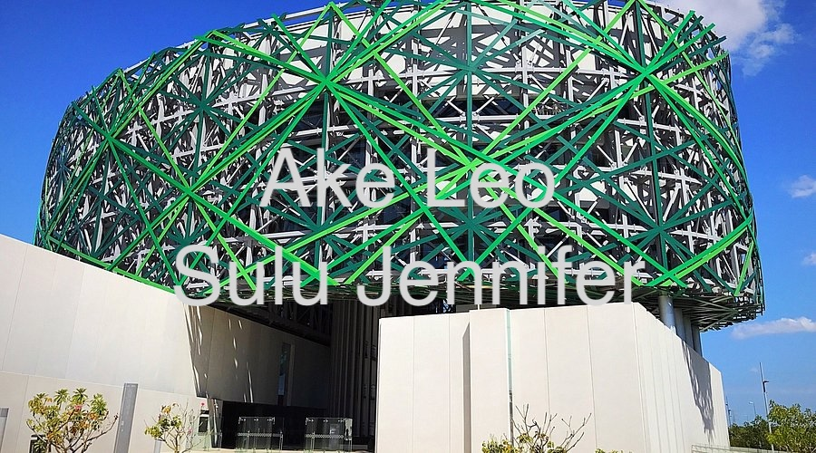

Gran Museo del Mundo Maya
Ubicado al norte de la ciudad, es un ícono arquitectónico
moderno. Alberga una extensa colección interactiva sobre
la cosmología, historia y el legado de la cultura maya
desde sus orígenes hasta la actualidad.Ese es el Gran Museo
del Mundo Maya que exhibe una magnífica colección de más de
1,160 piezas que reflejan la vida cotidiana de los mayas.